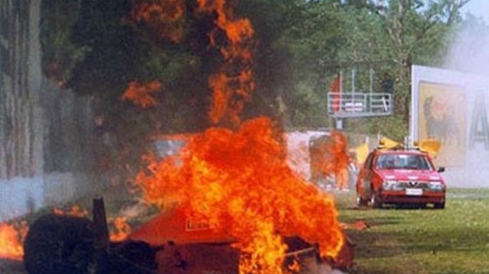
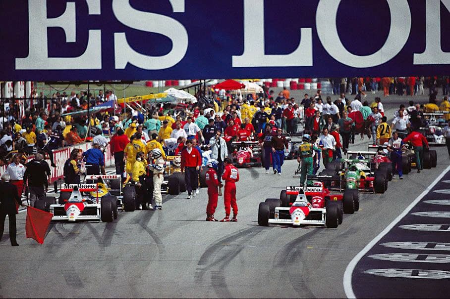
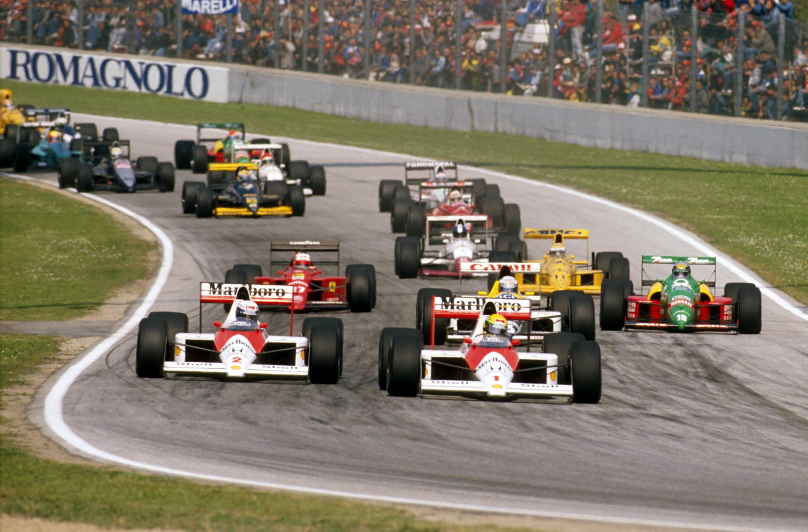
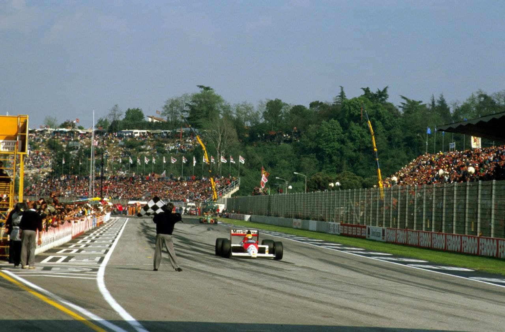

BERGER SALVO DE PAVOROSO ACIDENTE

Ferrari de Berger bate a mais de 200km/h e indendeia-se. Eficientes comissários chegam em 15,2 seg e salvam o piloto. Os dois McLaren dão uma volta ao terceiro - Nannini. Grouillard, Boutsen e Caffi desclassificados.
Francisco Santos
À medida que os segundos iam passando assustadoramente, os meus olhos ficavam embaçados. Era a inesquecível memória dos dramáticos momentos de Roger Williamson, em Zandvoort, em 1973, morrendo carbonizado no seu March. Gerard Berger permanecia envolto em chamas, dentro da sua Ferrari. Naquele braseiro alimentado pelos quase 200 litros de gasolina ainda existentes à 4ª volta, a temperatura e os fumos podem ser fatais. Recordações, também, do terrível acidente de Lauda no Nurburgring, em 1976.
A Ferrari de Berger seguia à 4ª volta atrás de Patrese, na 5ª posição. Na tomada da rapidíssima curva esquerda de Tamborello (onde Piquet batera a mais de 250km/h com o Williams, nos treinos de 1987), o carro segue em frente, direto para se chocar violentamente contra o muro, sem que seja esboçado qualquer movimento de direção para evitar ou corrigir o rumo fatal do carro. Boutsen, que seguia Berger, conta que "viu o spoiler dianteiro da Ferrari soltar-se". Depois de embater no muro a mais de 200km/h, de rodopiar e voltar a bater de lado, o carro incendeia-se, transfomnan-do-se numa bola de fogo, com Berger dentro.
Mas, felizmente que os tempos são outros. A segurança é muito maior. Dos habitáculos. Da pista. Em 15,2 segundos, os competentes comissários de pista italianos acionam o primeiro extintor em cima de Ferrari, conseguem por fim ao fogo em 5 segundos e retirar Berger do cockpit. Transportado ao Centro Médico do circuito, constata-se outro milagre, Berger nada tem, além de queimaduras nas mãos! Com três voltas já completadas, é dada a segunda largada, para mais 56 voltas. Mas, todo o mundo estava com a cabeça ainda no pavoroso acidente. Tudo o que acontecesse naquele fim de semana seria relegado para segundo plano. A F1 tinha-se encontrado de novo com o mais temido espectro do incêndio, e... saíra-se bem.

Havia ainda um GP para ser corrido. Com menos 1 volta, pois os comissários desportivos internacionais tinham cometido um erro, e decidido que a segunda parte da corrida teria apenas 55 voltas, esquecendo-se do regulamento: quando uma corrida tem de ser interrompida, "considera-se como realizada em duas partes - a primeira tendo fim quando a viatura que lidera atravesse a linha do chegada pela ante-penúltima vez antes da corrida ser interrompida". O acidente de Berger deu-se no início da 4a volta c a bandeira vermelha foi mostrada a Senna no final dessa 4a volta. A classificação da primeira mancha deveria, portanto, ser a da 2a volta, e a segunda mancha deveria ter 56 voltas (no caso de uma segunda largada tiram-se 3 voltas para levar em conta mais uma volta de aquecimento). Neste caso, os comissários desportivos levaram em conta a classificação ao final da 3a volta, e deram largada para mais 55 voltas. Afinal, quem estava com cabeça para pensar em regulamentos? Os comissários deveríam estar, já que os pilotos estavam lá para correr a segunda mancha. Os tempos são outros: não só de mais segurança, como de cabeça mais fria. Corsmit, Presidente dos Comissários Desportivos devia saber disso, elo que viveu o horror de Zandvoort em 1973 como dirigente. Este seria apenas o primeiro de uma série de erros dos comissários desportivos.

De todas as preocupações, pelo menos uma os pilotos não tiveram de enfrentar na corrida: Arnoux batera nos treinos e não se qualificara para o grid. Como sucedera no Brasil também, as pré- qualificações foram dominadas pelos dois Brabham, de novo com Modona na frente de Brundle. Caffi e Larini passaram as pré, o que não aconteceu de novo com Johansson, agora devido a um acidente em Tosa, o que comprometeu a melhoria de performance do Onyx. Os treinos foram um pouco conturbados. No primeiro dia chovera, e até Senna havia rodado, enquanto Berger conseguia a pole provisória. No segundo dia, Berger, na tentativa de manter a pole defronte dos tiffosi, comete vários erros de excesso , enquanto Senna repõe o status habitual: faz mais uma pole, a sua quinta consecutiva neste circuito - um novo recorde. Alboreto não conseguiu qualificar o novo Tyrrell 018 devido a pequenos problemas mecânicos. Também Roberto Moreno não conseguiu melhor que o último tempo dos treinos com o Coloni velho devido a um curto-circuito que incendiou toda a fiação elétrica, e à dificuldade em acertar o carro.

Este foi um GP de confirmações: depois do acidente de Berger ter mostrado o maior nível de segurança da F1, a prova demonstrou o que no Rio havia sido escondido pelo acidente de Senna e a embreagem de Prost - os McLaren/Honda continuam a dominar. Depois de superarem as Ferrari e Williams nos treinos em 1,5", Senna e Prost fizerem a primeira dobradinha do ano, e deram mais de uma volta ao terceiro classificado - um Nan- nini sem problemas! Como nos tempos dos turbos! Isto, apesar de Prost ter perdido muito tempo nas ultrapassagens a Warwick e Boutsen a 15 voltas do final, e de ter dado uma incaracterística rodada três voltas depois. O grande destaque da corrida foi o quinto lugar de Palmer, com o mesmo Tyrrell 018 que havia dado problemas a Alboreto nos treinos. Nelson Piquet rodava em quarto lugar quando o motor Judd explodiu. Também o motor Renault de Patrese quebra, enquanto Boutsen chega em quarto, mas é desclassificado, como Caffi (que chegara em sétimo). A Ligier, que vira a bandeira preta da exclusão ser mostrada a Grouillard à 2a volta da 2a mancha por ter substituído a ca-renagem inferior do carro danificada quando o piloto diminuiu bruscamente a velocidade ao passar pelo local do acidente de Berger, e Caffi lhe tocara na traseira, decidira agora protestar os dois carros de Boutsen eCaffi que haviam trocado de pneus com a autorização dos comissários desportivos (um dia negro para estes...). Gugelmin, depois de ficar sem embreagem à 19a volta, teve de parar para trocar um pneu furado nos destroços do acidente de Modena; voltou à pista depois da longa parada de box, mas, sem a la e 2a marchas, abandonou.

Opinião: Reginaldo Leme
Depois da emocionante corrida do Brasil, é melhor esquecer esta de San Marino. A McLaren sabia o tempo todo que tinha um carro que parecia ter sido feito para a pista de Imola. Ninguém queria colocar em risco a sua primeira vitória no ano. A única briga que poderia acontecer seria entre Senna e Prost — e o próprio brasileiro já dizia, no sábado, que sentia um certo receio dessa disputa, porque Prost, de uns tempos para cá, vinha agindo de forma bem diferente em relação ao ano passado. Como nem essa briga aconteceu, para quem viu a corrida de fora, uma vitória como esta de ponta a ponta pareceu fácil. Mas nada é fácil na Fórmula 1. Senna também teve seus problemas e, sozinho dentro do cockpit, chegou a pensar que o carro não terminaria a prova, porque o freio estava acabando e a segunda marcha escapava com freqüência. Por tudo isso, sem dúvida, este foi um round da luta que Senna venceu com boa margem. Mas tem outra coisa certa: este ano, a briga vai ser mais dura. O francês mudou e está querendo incomodar, foi a conclusão de Senna logo nas primeiras vezes em que os dois estiveram juntos na pista este ano. E aí está a questão. Prost mudou até o seu estilo de guiar, tanto em treino quanto em corrida. Mas, na primeira vez em que colocou em prática a sua tática de atacar Senna (porque no Brasil não chegou a precisar disso), deu-se mal. Senna não cometeu uma única falha e, ao contrário, quem acabou errando foi o próprio Prost, que colocou a vontade além do limite de um carro já quase sem pneus e rodou. Na pista, Senna suportou bem a pressão. Mas fora dela não escapou ileso das farpas lançadas por Prost, quando os dois desceram dos carros. O francês cerrou os punhos num gesto agressivo e, depois, acusou: “Nós fizemos um acordo de não atacar um ao outro no começo da corrida para evitar o risco de um acidente. Só quando as coisas estivessem definidas, começaríamos a nossa corrida pela vitória, cada um por si. Mas ele não cumpriu o acordo, e isso não vai ficar assim”. Nunca se viu um pódio com tanta frieza. Do champanhe de Prost saíram algumas gotas. E o de Senna nem abriu, na hora do banho que poderia apagar as mágoas.